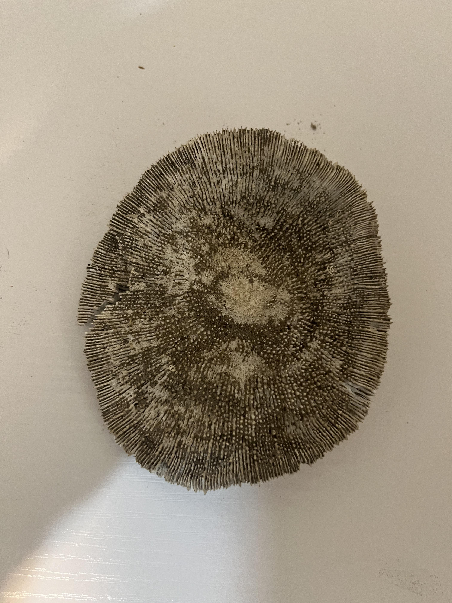

Ancient Origins
Fungi have existed for over one billion years. Some of the earliest multicellular organisms, they played a major role in breaking down organic matter — helping to form fertile soil on Earth. Fossilized fungi have even been found preserved in amber, showing their presence during the time of dinosaurs.
Ancient civilizations like the Egyptians and Chinese held mushrooms in high regard, using them in both food and medicine. The famous “Reishi” mushroom was called the “mushroom of immortality” in Chinese culture.